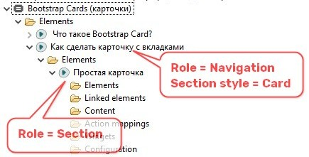

Для того чтобы сделать простую карточку:

Для того чтобы сделать карточку с дочерними контент-блоками в виде вкладок:
Генерируем сайт и получаем карточку с вкладками.
Для того чтобы сделать карточку с дочерними контент-блоками в виде вкладок:
Генерируем сайт и получаем карточку с кнопками-таблетками.